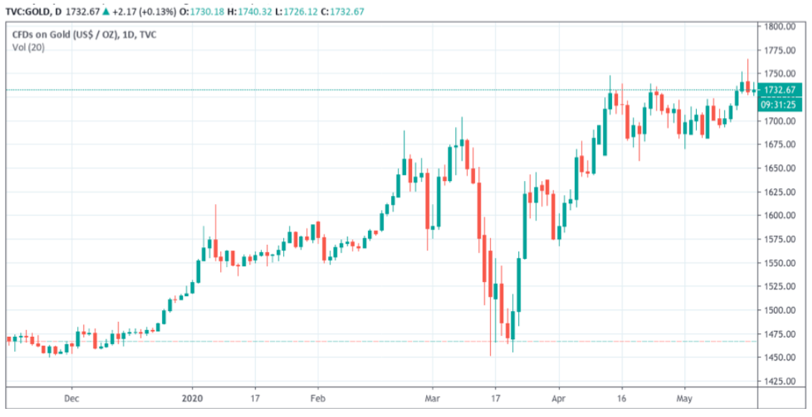

فوائد تداول الذهب – د. مرهف العطاسي
تداول الذهب هي فرصة استثمارية مربحة
للغاية لأي مستثمر طموح، حيث تتوفر فرص تداول على الذهب لا حصر لها وتمكن المستثمر من تحقيق عائد كبير.
استثمار الذهب هو استثمار آمن
يعد تداول الذهب حلاً مثالياً للمتداول ذو عتبة منخفضة المخاطر، حيث يُنظر إليه غالبًا على أنه
أحد خيارات الاستثمار الأكثر أمانًا خلال المناخ الاقتصادي المضطرب. تقليديا يوصف الذهب بأنه "الملاذ الآمن"
للأدوات المالية، حيث لعب تداول الذهب تدريجيا دورا بارزا في العديد من المحافظ الاستثمارية للمستثمرين.
طوال الأزمات المالية العالمية،
اختار العديد من المستثمرين الاستثمار في الذهب للتحوط ضد الاضطراب الاقتصادي. على الرغم من أن أسعار
الذهب والعملات يتم تحديدها إلى حد كبير من خلال السوق والأحداث الاقتصادية، إلا أن الأحداث المحددة التي
تؤثر على هذه القيم تختلف بشكل كبير. في معظم الحالات، يتحرك سعر الذهب بالفعل في الاتجاه المعاكس من
الأصول المالية الأخرى، مثل الأسهم أو السندات. هذا يعمل بشكل جيد نحو الحد من مخاطر المحفظة بنجاح.
لنلقي نظرة على الرسم البياني الذي يوضح كيف يتعامل مستثمري الذهب مع الازمة العالمية الحالية:

يكشف
الرسم البياني ان عمليات الشراء كانت مكثفة جدا خلال فترة الازمة، حيث يوجد فرق كبير بين سعر الذهب في أوائل
العام، الذي تمركز حول 1475.00 دولار للأونصة الواحدة. بينما الآن يسجل سعرا في مستويات 1732.67 دولار للأونصة.
كما نلاحظ أن مستويات الشراء انخفضت بشكل كبير، عندما انخفضت أسعار النفط بشكل مفاجئ وأيضا بدأت عمليات الاغلاق
في جميع أرجاء البلاد في شهر مارس. هذه الرسوم البيانية هي ترجمة لمشاعر المستثمرين وتصرفاتهم وسط الأحداث.
إمكانية تحقيق أرباح عالية
عندما تتداول الذهب، ستتمكن من الاستفادة من السيولة العالية. يمكن تنفيذ صفقات
تداول الذهب على مدار 24 ساعة في اليوم، 5 أيام في الأسبوع، وبما أن الذهب هو أحد الأصول عالية السيولة، فإن
إمكانية بيعه وشرائه لا هوادة فيها، مما يعني أنه من السهل جدًا تحقيق عوائد عالية على دخل المستثمر.
بالإضافة إلى ذلك، فروق الأسعار، حيث أن الرافعة المالية تصل إلى 200:1، مما يعني أنه على
الرغم من أنه يمكنك التداول على مبلغ أصغر من إيداعك الأولي، فإن الرافعة المالية ستمكنك من تحقيق ربح كبير.
التنويع هو المفتاح
نظرًا لأن الطريقة المثلى لزيادة الإيرادات
وحماية محفظتك هي التنويع، فقد مهد تداول الذهب الفوري الطريق نحو الربحية وتنويع المحفظة. يقوم العديد من
المتداولين بتداول الفوركس وتداول الذهب، إلى جانب العديد من أنواع التداول الأخرى، لتعزيز فرصهم في الربح.
عند تداول الذهب الفوري، يمكنك شراء الذهب أو بيعه مقابل الدولار الأمريكي التي يرمز لها XAU/USD،
والمضاربة على ما إذا كانت الأسعار المستقبلية المختلفة سترتفع أو تنخفض في قيمتها. يمكنك أيضًا كسب المال في
الاتجاهين، لذلك، حتى إذا كان صعود الذهب ينخفض، إذا قمت بتحليل هذا الانخفاض بشكل صحيح، فستظل تحقق ربحًا.
أهمية المصادر التعليمية
نظرًا لأن وسطاء تداول الذهب يدركون شعبية تداول الذهب الفوري، فإن
المواد التعليمية منتشرة بشكل كبير. يوفر الوسيط المفضل لدي Q8 Trade مجموعة كاملة من الأدوات التعليمية،
بما في ذلك الدروس والبرامج الإرشادية. إن توفر كل هذه الموارد يساعد المستثمرين على تحقيق مكاسب مالية
كبيرة عند الاستثمار في الذهب. الى الآن نتوصل انه ليس من الصعب دخول استثمار الذهب، وأنه عالم واسع من
الفرص التي بإمكانها تغيير مجرى حياتنا، لكن من المهم اختيار الوسيط الصح ليكون هذا التغيير إيجابيا.